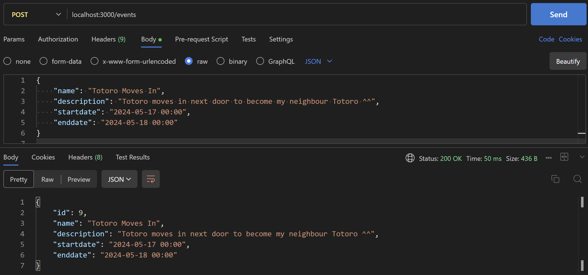

Example URL: "localhost:3000/events"
Example URL: "localhost:3000/events/1"
Example URL: "localhost:3000/events/by-name/April Graduation"
Example URL: "localhost:3000/events"
A POST request would require additional request body content sent (in json format) with the request in order to create a new event.
This means that a form of some sort to include input from the user, and processing to convert text to json would need to be implemented.
The specific parameters required in the request body to create a new event are as follows:
* Each Event has an 'id' parameter, but it is incremented automatically by the database so it is not specified here. *
** An example of testing the POST function of this EventsAPI using the POSTMAN extension on VSCode is shown below. **
Example URL: "localhost:3000/events/2"
A PUT request specifies the ID of the specific event the user wishes to edit, and requires additional request body content to specify the event's updated content. The PUT request should have the same parameters as shown for the post request, with edited values as required.
* The PUT request may be used to update any parameter of the Event, except for it's ID. *
API route: "localhost:3000/events/1"
* This API method does not require a request body, but it requires a form of some sort to allow user input and event handlers to process the delete request. *
API route: "localhost:3000/events"
* This API method does not require a request body, but it's functionality requires a button with an event handler rather than a URL. *
POST request as tested using the VSCode POSTMAN extension:
The image above displays the method set to "POST", and the url as specified above in the documentation "localhost:3000/events". The request body is as shown in the documentation for POST, and sets values for each parameter. The request body is set to JSON. As shown in the image, the request body does not include input for id, but because the sql database table was set to have the id increment automatically, the response body shows an id of 9. Because the request was successful, the status number shows "200 OK", and the response body shows the created event in JSON format.